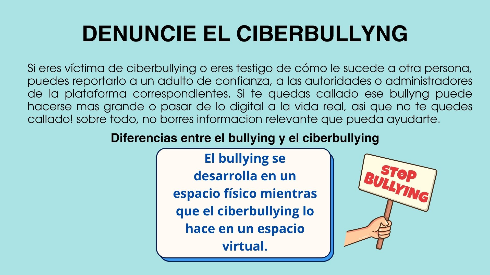

La ciberseguridad es como un cinturón de seguridad, pero para cuando usamos internet.
Así como cerramos la puerta de casa con llave o miramos a ambos lados antes de cruzar la calle,
también debemos protegernos cuando estamos en redes sociales, jugamos online o usamos apps.
En internet no siempre vemos el peligro, pero eso no significa que no esté ahí.
Puede esconderse en un mensaje raro, una página falsa, una app que parece divertida pero es peligrosa,
o incluso en alguien que finge ser otra persona.
Amenazas más comunes en internet
Hay muchas formas en las que alguien puede intentar hacernos daño o engañarnos. Estas son algunas de las más comunes:
Malware: Programas malos que dañan el celular o la compu, como virus o espías.
Ejemplo: Descargás un juego de una página rara y tu celular empieza a andar lento o raro.
Phishing: Trampas que usan mensajes falsos para que des tus datos.
Ejemplo: Un correo dice que ganaste un premio y te pide tu número de cuenta o contraseña.
Suplantación de identidad: Alguien se hace pasar por otra persona en redes o juegos.
Ejemplo: Una cuenta con la foto y nombre de tu amigo te pide plata, pero no es él.
Ciberbullying: Maltrato digital como insultos o burlas en redes o juegos.
Ejemplo: Suben una foto tuya sin permiso para reírse o te mandan mensajes molestos.
Ingeniería social: Alguien te manipula para que des información sin darte cuenta.
Ejemplo: Te dicen que ganaste algo, pero te piden datos privados para "enviártelo".
Grooming: Un adulto finge ser alguien de tu edad para ganarse tu confianza con malas intenciones.
Ejemplo: Alguien empieza a hablarte diciendo que tiene tu edad, te pide fotos y que no le cuentes a nadie.
¿Qué puede pasar si no nos cuidamos?
Si no nos protegemos, pueden pasar cosas graves:
Te roban tus redes sociales o correo.
Compran cosas con tus datos sin permiso.
Comparten fotos o mensajes tuyos sin que quieras.
Te podés sentir mal, con miedo, vergüenza o ansiedad.
En casos graves, puede haber problemas legales o emocionales.
¿Cómo nos podemos cuidar?
Algunos consejos para protegernos en internet:
Usá contraseñas difíciles y no las compartas.
No abras enlaces ni descargues cosas de personas o páginas desconocidas.
Activá la verificación en dos pasos en tus redes.
Actualizá tus apps y el sistema del celular o compu.
Instalá antivirus o pedile ayuda a alguien para revisar tu dispositivo.
Si algo te parece raro, contáselo a alguien de confianza (mamá, papá, profe, etc.).
Nunca compartas datos personales con personas que no conocés.
La educación digital es muy importante. Cuanto más sepas sobre los peligros,
más fácil va a ser evitarlos. Y recordá: si algo raro pasa o no sabés qué hacer, no te lo guardes. Siempre hay alguien que puede ayudarte.

Casos Reales
Grooming en redes sociales
En 2023, una adolescente de 14 años fue contactada en una red social por un adulto que se hizo pasar por un joven de su edad. Este adulto comenzó a ganarse su confianza con mensajes diarios y luego intentó obtener fotos personales. Gracias a que la joven habló con sus padres y ellos denunciaron el caso, se pudo detener al agresor y evitar daños mayores.
Un niño de 13 años sufrió acoso constante a través de mensajes ofensivos y rumores difundidos en grupos de WhatsApp y redes sociales por parte de compañeros. La situación afectó su autoestima y rendimiento escolar. La familia y la escuela trabajaron juntos para brindar apoyo psicológico al menor y sancionar a los responsables, logrando detener el acoso.
En 2024, una joven descubrió que alguien había creado un perfil falso con su nombre y fotos para pedir dinero a sus contactos. Ella denunció rápidamente y, con la ayuda de la plataforma, se eliminó el perfil falso y se tomaron medidas legales contra el impostor. Este caso resalta la importancia de no compartir información sensible y de verificar perfiles.